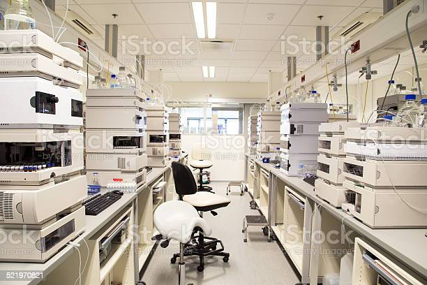

Fire Industrie S.R.L.
pharmaceutic Industrie
 Accedi ai nostri servizi
Accedi ai nostri servizi
Accedi ai nostri servizi
Accedi ai nostri servizi
L' Industria Farmaceutica impiega una vasta gamma di scienziati tra cui farmacologi, biochimici, chimici e tossicologi che hanno un ruolo fondamentale nella scoperta, nello sviluppo e nella produzione di farmaci. Generalmente l'Industria Farmaceutica si occupa di condurre ricerche, effettuare esperimenti e sviluppare chimicamente compresse, unguenti, creme ed altri prodotti farmaceutici, in laboratorio. Le aziende farmaceutiche possono trattare sia farmaci generici che di marca ed attrezzature mediche. Sono soggette a leggi e normative che regolano brevettazione, test, sicurezza, efficacia e commercializzazione dei farmaci.
I nostri laboratori all'avanguardia permettono una ricerca di qualità con grande efficienza. Grazie alle moderne tecnologie installate riusciuma a garantire la sicurezza dei farmaci. I laboratori moderatamente ampi e la quantità ingente delle attrezzature, permettono a uno staff di trenta persone di lavorare con discrezione.
La Fire Industrie è in possesso di 46 laboratori complessivi sparsi in tutto il paese,tra cui il 10% di questi sono laboratori informatici adibiti a preservare i dati farmaceutici all'interno di un Database.